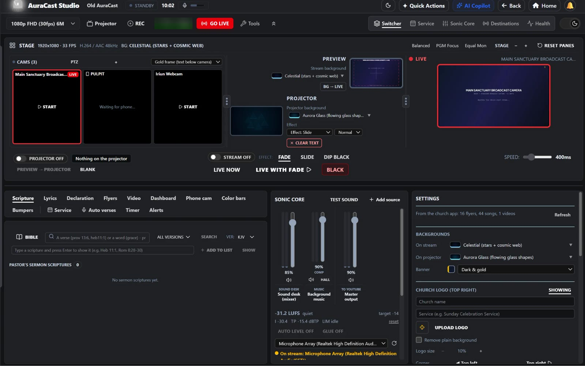

AuraCast Studio
A desktop live-production system: multi-camera switching, graphics, audio mixing and streaming in one app. It runs every service at my church, on Windows and Mac.
- Native C++ streaming and recording engine up to 4K: FFmpeg (LGPL) encoding, a Direct3D 11 path on Windows
- Sonic Core, a real-time audio engine with no locks or memory allocation on the audio thread
- Phones as wireless cameras over the local network, through native Swift and Kotlin apps
- Speech-driven graphics, NDI output, a phone remote deck, and messages parsed into slides and running orders
STAGE 1920×1080 · 30 FPS · H.264 / AAC 48 kHz · NDI · YouTube Live
Audio was the hard part. A live mix can't stutter, so Sonic Core does no locking and no memory allocation on the audio thread. On Windows the church's digital mixer shows up as separate stereo USB pairs instead of one device, so the engine had to put the channels back together itself. Video gets its own Direct3D 11 path on Windows. When another AI agent began contributing engine code, I set a rule: nothing it writes is merged until it has been read for real-time safety and licences, and the engine tests pass.